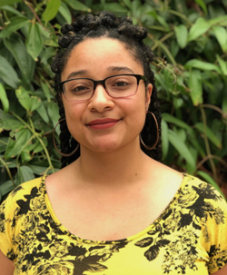

![]()

This piece is written by Dr. Antoinette Foster, who works to directly impact personal and interpersonal racism by empowering community members to become leaders of change. Her career aspiration is to radically shift scientific research culture towards establishing and practicing inclusive values and actions required to drive racial equity overall. All thoughts shared by her are her own and not a reflection of the position of her employer.
This contribution was supported by Mozilla, who funded the Pathways to Open Science Program in part in 2024 through a Mozilla Alumni Connection grant to Openscapes and PREreview that connected Dr. Foster with the Pathways Team. Thank you! See the 2024 Pathways Summary Report.
A letter to researchers that want to make the world a better place
Like many people, I am interested in world shaping, which for me means learning how to shape the world so it is a better place for myself, for others, and for future generations. At the same time, I have always been fascinated by how things work - from humans, to cells, to relationships - I am eternally curious. I combined these passions during graduate school by advocating for racial equity within my university while I pursued my PhD in Neuroscience. This is the path of many marginalized folks both inside and outside of higher education; our experience with marginalization tunes us into what doesn’t work within the places that we work and live and we work tirelessly, and oftentimes without credit and at great risk, to fix it.
After 6 years of anti-oppression work as a graduate student, I’ve spent the last 4 years working towards anti-oppression within the program and university that I graduated from as the co-director of the Racial Equity and Inclusion Center at Oregon Health and Science University.
I started my activism journey in graduate school by asking myself “How can programs and universities practice anti-racism?”. This evolved to “How can the entire scientific enterprise practice anti-racism?”, which evolved to “How can the scientific enterprise practice anti-oppression?”. This evolution led me to my current question, which is “How do we create collective liberation for our people and our planet, both locally and globally?”. In all of these questions, I sought to understand what was missing and what we needed to shape change. Shaping change is a concept taught to me by Octavia Butler in the novel Parable of the Sower, which explains that change is constant, and while we cannot stop it, we can shape it. I’ve learned from so many world builders: my parents, Black radical visionaries such as Angela Davis, adrienne maree brown, James Baldwin, and bell hooks, Indigenous scholars such as Drs. Eve Tuck, David Kenau Sai, and Megan RedShirt Shaw, and anti-oppression and liberation activists like Thich Nhat Hanh and YK Hong (@ykreborn). I am grateful that I have more teachers than I can remember or have room to cite, but together, they have taught me invaluable truths about oppression, collective liberation, the interconnectedness of everything, and how to shape change. I want to share a few lessons that impacted my understanding of world shaping. Some of these lessons may be new to you and some may confirm what you already know in your mind or your spirit. Regardless, I hope it helps you on your journey of shaping change and world building, wherever you are.
Lesson 1: Our oppression is connected, and so is our liberation
This lesson is one that is becoming more common knowledge but is so fundamental to our collective liberation, we must say it often and loudly. We are fighting many systems that do not serve us, and we are fighting them all at once. While I focused on racism in my younger years, I have come to understand that racism is only one piece of something much larger. We face challenges from the system of racism, but also the systems patriarchy, colonialism, capitalism, ableism, classism, and more. All of these different systems of oppression work together to uphold and reinforce each other, which means to address any of them, we will have to address them all. If we label all of this as “systemic oppression” and look at its overall impact, we see that even though we are each hurt by these systems to varying degrees, we all suffer in some way. Even on the most basic level, all of these systems drive us away from community, human connection, and away from our own humanity. Marginalization, exclusion, division, inequality- they all serve to take resources or care away and to put distance between you and other humans by creating unnecessary and oftentimes fictitious hierarchies.
The harm that we experience within our programs or universities is connected to the harm we experience at the state or nation level, which is connected to the harm experienced by others across the globe. For instance, within the sciences, the lack of hiring of faculty of color within a university is connected to systemic barriers faculty of color face with tenure and promotion at a national level, which is connected to the global pattern of academic research being underfunded and devalued within the “Global South”. These examples are all connected and shaped by colonialism, racism, White Supremacy and Western dominance. Even though it may seem unrelated at first glance, this is also connected to the fact that those who are the most marginalized will be amongst those who are most impacted by global climate catastrophe, as this too is shaped by global systemic oppression. Everything is connected and systems of oppression benefit when we do not understand how connected our oppression really is. Systemic oppression is stronger when we are divided and pitted against each other. This means we have to find ways to collectively fight oppression on all fronts, at the same time- because your oppression is my oppression, which also means that my liberation is your liberation. This challenge may feel overwhelming but remember, humans created these systems, and anything we create, we can change.
Lesson 2: What we see on the small scale is reflected in the larger scale
Radical visionaries like adrienne maree brown and Octavia Butler taught me the importance of fractals, which describes infinite patterns that are similar across time and space. Applying that concept to world shaping means that the ways things are on a small scale is reflected in the large scale. For example, the relationship I have with myself is reflected in my relationships with other people, which is reflected in their relationships with other people. This is collectively reflected in my city, in my country, and in the world. This principle has taught me two important considerations.
Firstly, if I want the world to be different, I have to be different. I have to move with the knowledge, grace, accountability, honesty, and care that I want to see reflected in the world. I have to truly embody the principles and values I care about, even when it’s hard. This goes beyond a moral imperative. I understand my role in the movement and my influence on those around me, and by extension, the world. Embodying my values is joyous yet challenging work, however, the more of us who embody the change we want to see, the more change we shape.
Secondly, this principle has taught me to stay grounded in change. The magnitude of challenges we see can be overwhelming and we feel an understandable pressure to address it all at once. We feel there is no time to waste, but “there is always enough time for the right work” (brown 2017) especially if we start on a small, manageable scale. If the small scale work I do is repeated across space and time, (meaning, repeated in other places over time), small scale change can lead to large scale change. A beautiful example of this concept is the student-led pro-Palestinian protests that took place on college campuses across America in early 2024. One group of students at Columbia University believed that they could affect change and draw attention to the ongoing genocide of Palestinians (United Nations 2024) and the US’s role and complicity in this genocide through financial and arms support (Hudson 2024; U. S. Department of State 2023; Gould and McLeary 2024) with the goal of pressuring divestments from Israel. Many other student-led protests (Beckett 2024) propped up over time and across the US, which were often met with police and counter-protest brutality (Diaz 2024), but also resulted in significant divestments from many universities (Moody 2024) . The ripples we create can turn into tidal waves, and YK Hong reminds us that we are the waves. If you and I ensure our work is transformational on a small scale, then together, we create large scale shifts. This is how we shape our world even though we are only a tiny part of it.
Lesson 3: Make liberation irresistible
This work has taught me that ultimately, most people want the same thing. Generally speaking, we have universal basic needs, such as consideration, safety, food, care, companionship, and more. Systemic oppression lies to us and tells us we can only have these things when we take this from others, but liberation tells us that there is enough for everyone. It creates possibilities. Possibilities and change can feel scary to people, so instead of trying to convince people I am right (which is as effective as yelling at an apple to turn into an orange), I’ve learned it’s better to find out what others want, gather my vision-aligned squad, and work together to show folks that it’s possible for you and I to have everything we need. I aim to make what we create so attractive, it is irresistible. For instance, I spent years during my undergrad trying to convince our university leaders to address systemic oppression and engage in transformational processes. It was exhausting and I ended up just arguing with people about if the work was necessary. As a professional, our team now creates the changes we wanted to see within one small area in the university. We work with a few campus leaders instead of the entire campus (again, utilizing small scale change). We are starting to see leadership from across campus (and other universities) sense that we do things differently and see that our students are happier, our relationships are improving, and our community is getting many resources we previously lacked. This change is attractive and more people are choosing to come to us to help them think about how to implement this change in their own space. In our own way, we’ve shaped change and made it attractive and irresistible. (Read our 2022-23 Annual Report to check out some of the specific efforts our team has engaged with over the last year.)
Lesson 4: Relationships are everything
Relationships rule all. The relationship we have with ourselves, each other, and the land are key to our survival as people and key to the survival of our planet. Since systemic oppression aims to separate and divide us from ourselves, each other, and the land, then part of our resistance work is to reconnect. However, after a lifetime of socialization within these systems, many of us do not have the tools for connection. This socialization taught us to be out of touch with our feelings and needs and the ways that this shows up in our bodies. We may not even be aware we have feelings and needs or that our feelings and needs are directly tied to each other and trying to tell us something about ourselves. We devalue this knowledge and believe intellectual knowledge is superior. This is a lie. We must connect with ourselves so we can connect with each other and the Earth. Additionally, systemic oppression taught us that the land, water, and air are indefinite resources that are placed here for us to exploit. Indigenous teachers have known for millennia that this is also a lie. We are not above nature, we are a part of it.
Audre Lorde taught us that we will never dismantle the master’s house with the master’s tools, so if systemic oppression taught us to be disconnected from ourselves, others, and the Earth, we must do the opposite. To rebuild our world, we need tools that help us build relationships. For our relationship with ourselves and others, try using this chart to explore the relationship between your feelings and needs and learn non-violent communication strategies so you can communicate effectively with others. Practice learning, listening, and communicating with care and intention. To heal your relationship with the land, learn who the land you are on was stolen from, how colonialism works, and ask yourself, “What is my relationship to land?” (Red Shirt-Shaw, n.d.) . Once you gain the tools and knowledge, then teach others you are in community with. Our ability to shape the change that occurs around us will depend on the quality of our relational toolbox. To be in good relations, we must learn to heal what systemic oppression has harmed.
Lesson 5: Our collective liberation will not come from within our current systems
This concept tells us that we cannot wait for others to finally hear our pleas for change; we must build what we need ourselves. The powers that be benefit from the current systems of oppression, therefore, they will never dismantle them willingly. Our liberation will not come from within, but from outside, of our current systems and will have to come from our own communities. Luckily for us, we know what our community needs more than anyone so we have the most capable people on the job! Pathways to Open Science is a great, small-scale example of a small group of visionaries who saw a need for Black community and skill building within the environmental sciences. They may have asked universities or professional societies to create this type of community and were turned down in some form, or they may have always wanted this type of community but never saw it. Instead of waiting, they built. They practiced power-sharing by collecting and integrating feedback from the community to ensure they were building what their community needed. This is one example of many small-scale, community-driven, approaches people are taking around the world to provide our people with what we know we need.
The lessons I’ve shared can be applied to any change work. A student in the environmental sciences might ask how different systems of oppression show up and intersect in the community they are about to conduct research in. They might value the relationships they build within this community and value the solutions the local community has to their own problems. They might need to find creative ways to teach others truths that they know or build ways to make these truths irresistible for others to learn. A community member may walk through a similar thought process as they search for solutions to problems within their city, or we might apply these concepts to larger global issues. These lessons might ask you to re-prioritize what is important to you, shifting deeper towards understanding, connection, relationship building, and liberation. Regardless of where we apply them, these lessons guide us as we attempt to shape change and shape our world.
As we move forward in unpredictable times, our community and relationship-based skill set will become increasingly essential. We must remember that while we aim to dismantle oppressive systems, we must also be creating what we want to see, balancing destruction with creation. A question I ask myself and I encourage you to ask yourself frequently is, “What am I doing to get into community? What do the people around me need (even within your own city) and how can we, the people, provide that?”. We are attuned to our needs and the needs of those around us, and together, we can build a future that is irresistible.
Citations
Citation
@online{foster2024,
author = {Foster, Antoinette},
title = {A Letter to Researchers That Want to Make the World a Better
Place},
date = {2024-08-09},
url = {https://openscapes.org/blog/2024-08-09-antoinette-foster-letter-make-the-world-better-place},
langid = {en}
}